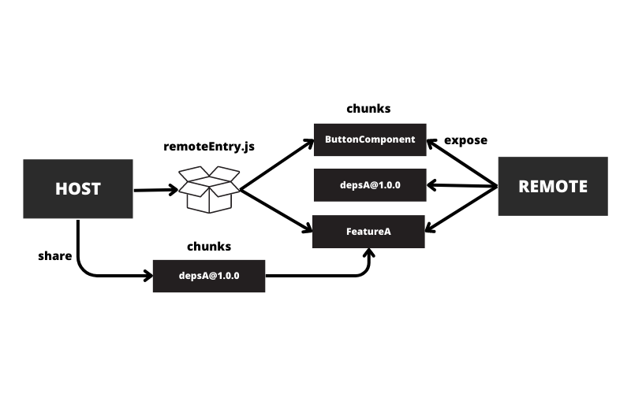
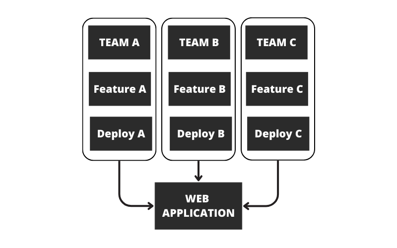

Multiple separate builds should form a single application. These
separate builds act like containers and can expose and consume code
between builds, creating a single, unified application.
Concepts

Use cases
Microfrontend
Components libs
A/B testing
Migration legacy, technical dept on framwork version, Mix
technologies
Decoupling, Boundaries, Build performance.
Organization

Demo
Component lib
Angular remote
Vuejs remote + event bus
Alternative to webpack Module federation
Import map native federation
Vite federation
Sysem JS
Frameworks like Single SPA
Webpack provide abstraction to manages deps sharing, init & load
modules
Warning
Security - mainly backend side. => Sign builds
Lot of example but poorly documented API
What's next
Medusa - Freemium, soon multiples open source project ?
Module delegation - Use code that host doesn't know in conf
Hot prod reload - reload feature or component without reloading
application